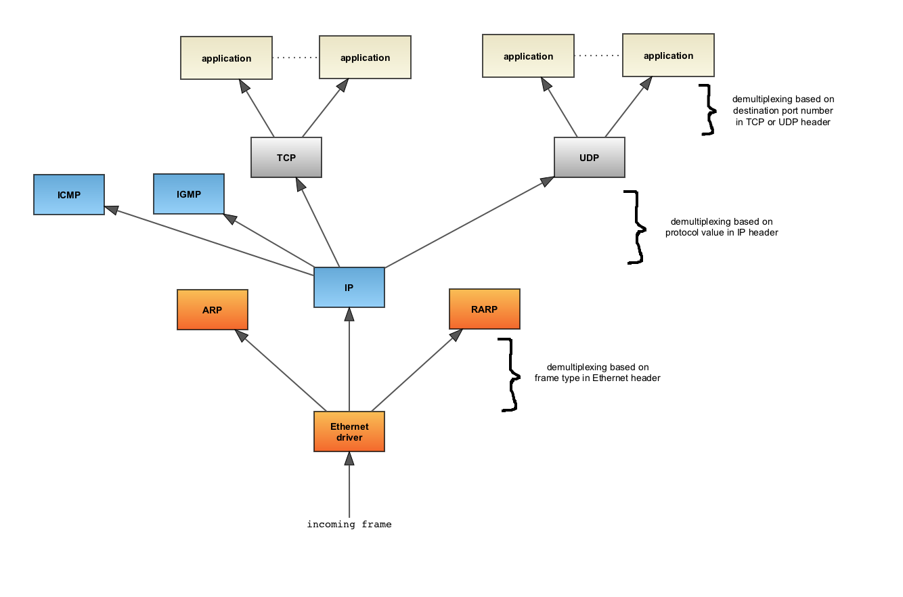

FigurePool - meet a new Flash-less diagramming tool
September 4th, 2012We have seen many online diagramming tools, copy-paste versions of applications we used to use on the desktop with all the drag&drop windows, menus, complicated UIs, minutes-longing loading times and mostly Flash-based technology driven. Thanks to the rapid development of browsers, internet technologies and online services we are living in the world of choice. Interaction with online applications is expected to be much different than interaction with offline desktop applications.
Things like sharing, collaboration and integration have developed over time and still we use Visio-like software to put up couple boxes, connect them together and export all that to be able to send it to another buddy via email to comment and make changes. We don't do that often because it's a pain. I believe software, systems, network and hardware architectures, workflows and all kinds of processes should be visualized quickly in minutes, it should be possible to send somebody a link so that they can make changes, comments and we should be able to browse and search diagrams of others that are meant for public.
With all that in mind, I started a project called FigurePool. Not only it provides an easy-to-use editor for creating diagrams and other graphics but also search and browse of diagrams that others create. Forget Flash, FigurePool relies on the newest HTML 5 technologies. It works seamlessly in modern browsers, it doesn't want to sacrifice rapid development progress in favor of fixing compatibility issues with old browsers. FigurePool does not contain a complicated UI that you have to spend hours to learn to use. No drag&drop windows, menus and tons of moving toolbars. Go right to the point, create your diagram, share it with your colleagues online, let them make changes or simply embed your diagrams into your own pages or blog posts and let those diagrams be synced through FigurePool whenever you update them. And what about the visitors of your blog? Let them edit and improve on your diagram easily and if you like the changes they made, just replace your diagram with its improved version. No more static images for things that should be editable.
And what if you're just looking for a diagram of a software or a system architecture? Don't reinvent the wheel, go to FigurePool.com and look it up. Did you find something that looks similar to what you were looking for but still slightly different? Clone this diagram to your own workspace, make changes and either store it privately or let other see it. It's simple as that.
Now what kinds of diagrams you can create with FigurePool? Well, only your creativity is your limitation. With all the basic shapes like rectangle, ellipse, text, free hand, embedded image search and inclusion, tool for taking screenshots of sites and arrow connectors the world of diagrams that you can create is limitless.
A sneak preview of one of the diagrams created with :
